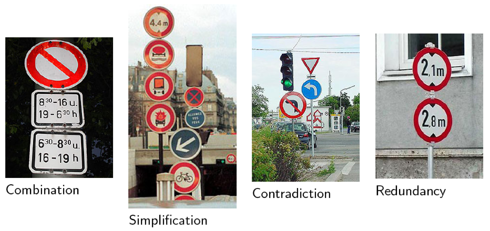
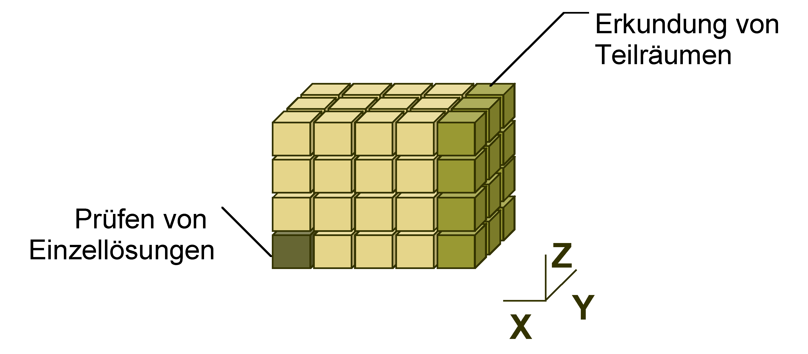
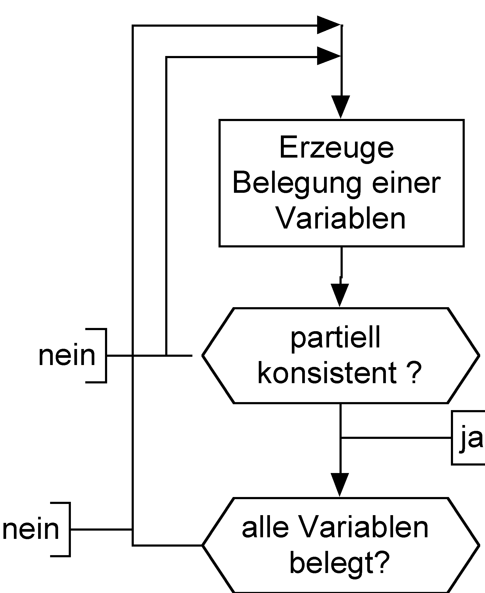
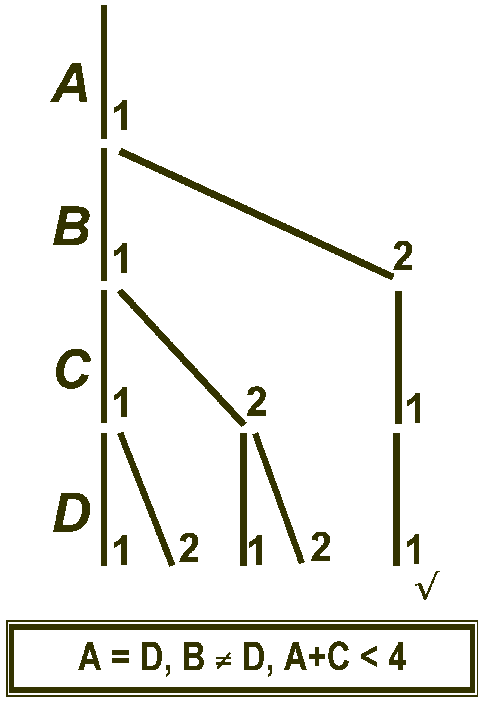
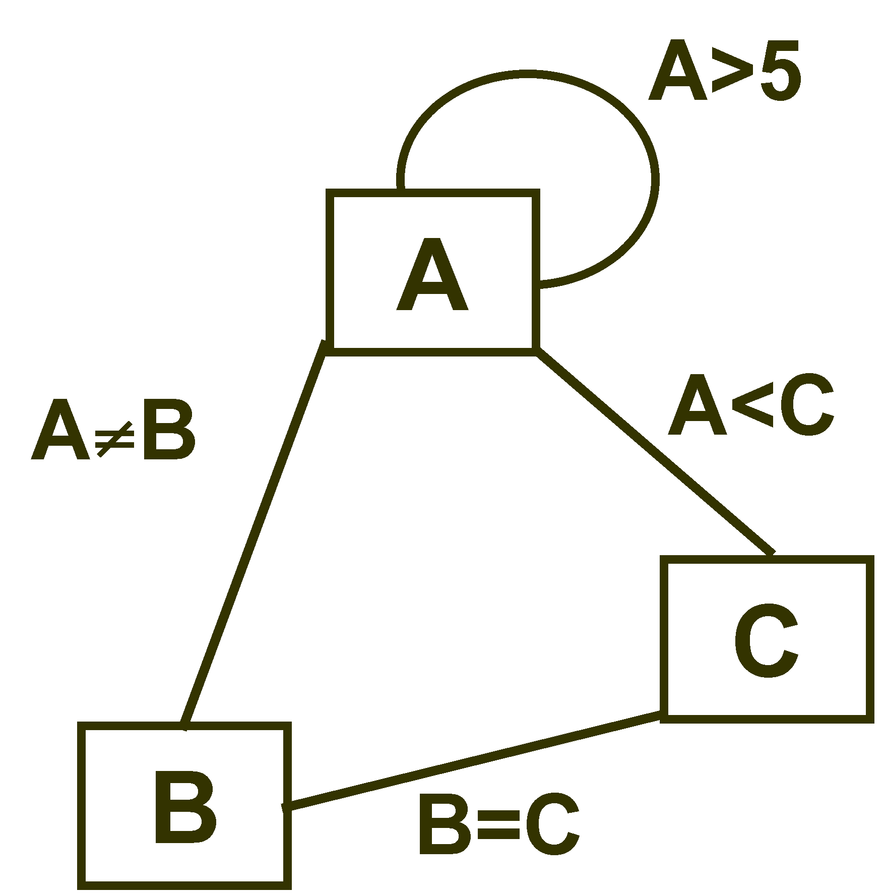

Constraint-Programmierung – Grundlagen
Programmierparadigmen
Ziele
- Kennenlernen grundlegender Begriffe der Constraint-Programmierung
- die zwei wichtigsten Lösungsverfahren in Constraint-Systemen unterscheiden können
Einstieg
Hier verwendete und weiterführende Literatur:
Begriff
- Die Constraint-Programmierung wird meist als eine Spielart der logischen Programmierung angesehen.
- Der Begriff constraint bedeutet in etwa Bedingung, Einschränkung, (Regel?).
- Man könnte auch von regelbasierter Programmierung sprechen.
- Regeln können in verschiedenen Formen auftreten:
- funktional orientiert: mathematische Gleichungen; Beispiel: \(x-y=23\)
- logik-orientiert: logische Prädikate bzw. Wenn-dann-Regeln;
Beispiel:
Gesucht ist die Zahl \(x\), die ein Zahlenschloss mit den Ziffern 0
bis 9 öffnet. Wir wissen, dass \(x\)
- \(\geq 5\),
- eine Primzahl ist
- Regel: \(x\in {0, 1, \ldots , 9} \wedge x\geq 5 \wedge prime(x)\)
Prinzip
- In der regelbasierten Programmierung wird ein ein Satz von Regeln (constraints) angegeben, denen die Lösung genügen muss.
- Es wird kein Algorithmus formuliert, der die Lösung Schritt für Schritt ermittelt.
- Ein regelbasiertes Programmiersystem muss daher über einen eingebauten Lösungsalgorithmus (Constraint-Löser) verfügen.
- Dieser versucht – vereinfacht gesprochen – einen Weltzustand zu finden, in dem möglichst viele der angegebenen Regeln gleichzeitig erfüllt sind.
- Mit der Gleichung \(x-y=23\) als einziger Regel, wird der Constraint-Löser wohl sagen müssen, dass die Regel durch unendlich viele Belegungen von \(x\) und \(y\) erfüllt werden kann.
- Fügt man als zweite Regel \(2x + 13 = y\) hinzu, gibt es nur noch eine Lösung.
Anwendungen
- Verarbeitung natürlicher Sprachen
- Datenbanksysteme (Konsistenzsicherung)
- Operations Research (Optimierungsprobleme)
- Ökonomie (Optionshandel)
- Layout-Berechnung für integrierte Schaltungen
- Erstellung von Stundenplänen
- Entscheidungsunterstützungssysteme für Planung und Konfiguration
- Kommerzielle Anwendungsbeispiele nach [Fruehwirth2010]
- Lufthansa: Short-term staff planning.
- Renault: Short-term production planning.
- Nokia: Software configuration for mobile phones.
- Airbus: Cabin layout.
- Siemens: Circuit verification.
Contstraints im Straßenverkehr

Holy Grail of programming
Constraint Programming represents one of the closest approaches computer science has yet made to the Holy Grail of programming: the user states the problem, the computer solves it.
[E. Freuder]
Begriffsdefinitionen
Einschränkung (constraint)
- Eine Einschränkung (constraint) stellt eine Beziehung zwischen verschiedenen Unbekannten (Variablen) her. Jede Variable kann Werte aus einem gegebenen Wertebereich (domain) annehmen.
- Eine Einschränkung beschreibt gegebenes Wissen über die Werte der Variablen.
- Eine Einschränkung beschreibt, welche Beziehung gelten muss, ohne eine Berechnungsprozedur dafür anzugeben, wie die Einhaltung der Beziehung erzwungen werden kann.
- Beispiel aus dem täglichen Leben: Terminabsprachen
Erfüllbarkeit (satisfiability)
- erfüllbar:
- Es existiert eine Lösung für die Einschränkungen.
- nicht erfüllbar:
- Es existiert keine Lösung für die Einschränkungen.
| \(X \leq 3 \wedge Y = X + 1\) | erfüllbar |
| \(X \leq 3 \wedge Y = X + 1 \wedge Y \geq 6\) | nicht erfüllbar |
Lösungsverfahren
- Zwei Lösungsstrategien
- constraint satisfaction
- constraint solving
- Constraint-satisfaction behandelt Probleme über endlichen Wertemengen. Schätzungsweise mehr als 95% aller industriellen CP-Anwendungen benutzen endliche Domänen.
- Constraint-solving behandelt Probleme über nicht endlichen Wertebereichen.
- Während beim Constraint-satisfaction kombinatorische Methoden zum Einsatz kommen, werden beim Constraint-solving mathematisch-analytische Verfahren benutzt (Differentiation, Integration, Taylor-Reihen etc.).
Constraint-satisfaction
Prinzip
Ein Constraint-satisfaction-Problem (CSP) wird definiert durch:
- eine Menge von Variable \(X=\{x_{1},...,x_{n}\}\),
- für jede Variable \(x_{i}\), eine endliche Menge \(D_{i}\) möglicher Werte (Domäne)
- eine Menge von Einschränkungen (constraints), die Werte, die die Variablen gleichzeitig annehmen können, einschränken
Beispiel: \[X=\{1,2\}, Y=\{1,2\}, Z=\{1,2\}\] \[X = Y, X \neq Z, Y > Z\]
Lösung eines CSP: Belegung jeder Variablen mit einem Wert aus ihrer Menge, so dass alle Einschränkungen erfüllt sind.
Beispiel: \[X=2, Y=2, Z=1\]
Systematische Suche
- Grundsätzlich kann ein CSP durch systematisches Durchsuchen des Lösungsraums gelöst werden.
- Ein solches Verfahren ist simpel aber ineffizient.
- Zwei Varianten:
- Generate & Test (GT): Eine Belegung aller Variablen wird erzeugt und geprüft.
- Backtracking (BT): Schrittweise Erweiterung korrekter Teillösungen zur Gesamtlösung.

Generate & Test
- Grundlegendes Verfahren zur Lösung von CSPs
- Algorithmus:

Nachteile:
- dummer Generator
- Nichterfüllbarkeit wird spät erkannt.
Backtracking
- Partielle Lösung wird schrittweise zur vollständigen erweitert.
- Algorithmus (vereinfacht):


- Nachteile:
- thrashing, d.h. wiederholte Fehlbelegung
- Nichterfüllbarkeit wird spät erkannt.
Anwendungsbeispiel für GT und BT
Aufgabenstellung: \[X=\{1,2\}, Y=\{1,2\}, Z=\{1,2\}\] \[X = Y, X \neq Z, Y > Z\]
Generate & Test
| X | Y | Z | Prüfung |
|---|---|---|---|
| 1 | 1 | 1 | fehlgeschlagen |
| 1 | 1 | 2 | fehlgeschlagen |
| 1 | 2 | 1 | fehlgeschlagen |
| 1 | 2 | 2 | fehlgeschlagen |
| 2 | 1 | 1 | fehlgeschlagen |
| 2 | 1 | 2 | fehlgeschlagen |
| 2 | 2 | 1 | erfüllt |
Backtracking
| X | Y | Z | Prüfung |
|---|---|---|---|
| 1 | 1 | 1 | fehlgeschlagen |
| 2 | fehlgeschlagen | ||
| 2 | fehlgeschlagen | ||
| 2 | 1 | fehlgeschlagen | |
| 2 | 1 | erfüllt |
Optimierungen der systematischen Suche
- Grundidee: Entfernung von inkonsistenten Werten aus der Wertemenge einer Variablen
- Repräsentation von binären und unären Einschränkungen durch Graphen:
- Knoten
- Variablen
- Kanten
- Einschränkungen
- Prüfung der
- Knotenkonsistenz (Entfernung von Werten im Widerspruch zu unären Einschränkungen)
- Kantenkonsistenz (dito für binäre Einschränkungen)
- Pfadkonsistenz

- Optimierung der Suche nach wie vor Forschungsgegenstand
Constraint logic programming
- Bei Constraint-satisfaction-Verfahren gibt es Anknüpfungspunkte zur logischen Programmierung.
- Daher wird in diesem Zusammenhang auch häufig der Begriff constraint logic programming (CLP) benutzt.
- Für Beispiele der Constraint-logic-Programmierung gibt es ein eigenes Kapitel.
- Zuvor betrachten wird Techniken des Constraint-solvings.
Constraint-solving
Literaturverzeichnis
- [Fruehwirth2010] Thom Frühwirth & Slim Abdennadher, Essentials of Constraint Programming (Cognitive Technologies), Springer (2010).
- [Marriott1998] Kimbal Marriott & Peter Stuckey, Programming with Constraints: An Introduction, The MIT Press (1998).
- [Bartak99] Roman Bart\`ak, Constraint programming: In pursuit of the holy grail, 555-564, in in: In Proceedings of the Week of Doctoral Students (WDS99 -invited lecture, edited by (1999)
- [Sicp1999] Harold Abelson, Gerald Jay Sussman & Julie Sussman, Structure and interpretation of computer programs, The MIT Press (1999).
- [Carro1998] Manuel Carro, An Introductory Course on Constraint Logic Programming, (1998), zuletzt aufgerufen am 10.09.2017: https://cliplab.org/~vocal/public_info/seminar_notes/seminar_notes.html